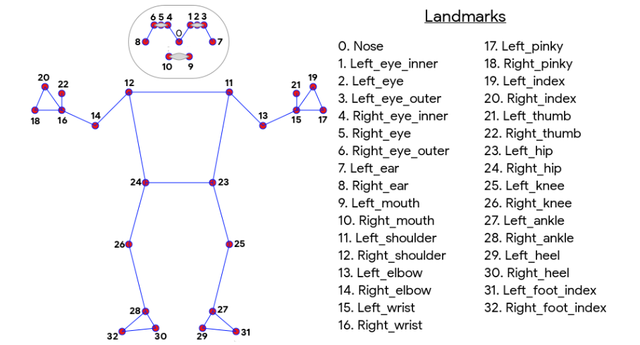

Topology:
The current standard for human body pose is the COCO topology, which consists of 17 landmarks across the arms, legs, and face. However, the COCO keypoints only localize to the ankle and wrist points, lacking scale and orientation information for hands and feet, which is vital for practical applications like fitness and dance. The inclusion of more keypoints is crucial for the subsequent application of domain-specific pose estimation models, like those for hands, face, or feet.
Outlook And Future Trends:
Pose estimation for objects is a major trend in computer vision. Object pose estimation allows gaining a more
detailed understanding of objects compared to two-dimensional bounding boxes. Until now, pose estimation is still
computationally very intensive and requires expensive AI hardware (often multiple NVIDIA GPUs) that is not
practical for real-world use.
Edge AI technology New technologies and methods make it possible to decrease the
size of AI models, making pose estimation algorithms less “heavy” and much more efficient. This is the basis for
the real-world implementation of human pose detection. As a result, it becomes possible to deploy pose estimation
algorithms to edge devices and perform on-device machine learning (Edge AI).
Edge Inference makes the technology scalable, more robust for mission-critical applications (offline capability),
and private (no visuals need to be sent to the cloud).
An example of a lightweight pose estimation model for Edge ML is Lightweight OpenPose.
Applications Of Human Pose Estimation:
One of the clearest areas in which pose estimation is applicable is in tracking and measuring human movement. Using human pose estimation to track human movement could also power several other experiences such as:
- AI Powered Sports Coaches And Personal Trainers
- Zenia is an AI-powered yoga app that uses Human Pose Estimation to guide you towards achieving a proper posture during your yoga workouts. It uses the camera to detect your pose and estimates how accurate your pose is-if it is correct, then the predicted pose will be represented in green. If the pose isn't correct, the red color will replace the green one.
- Surveillance And Human Activity Monitoring
- Pose estimation is highly valued in surveillance systems in the big data. Some surveillance cases don’t require spotting a crime in a crowd of people. Instead, cameras can be used to automate everyday processes like shopping at a grocery store. Cashierless store systems like Amazon GO, for example, apply human pose estimation to understand whether a person took some item from a shelf
- Animation And Gaming
- Game development is a tough industry with a lot of complex tasks that require knowledge of human body. Human pose estimation is widely used in animation of game characters to simplify this process by transferring tracked key points in a certain position to the animated model.
- Athlete Pose Detection
- Pose detection can help players to improve their technique and achieve better results. Apart from that, pose detection can be used to analyze and learn about the strength and weaknesses of the opponent, which is invaluable for professional athletes and their trainers.
- Robotics
- Robotics has been one of the fastest-growing areas of development. While programming a robot to follow a procedure can be tedious and time-consuming, deep learning approaches can come to the rescue. Techniques such as reinforcement learning use a simulated environment to achieve the accuracy level required to perform a certain task and can be successfully used to train a robot.